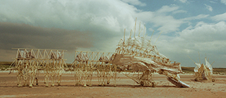
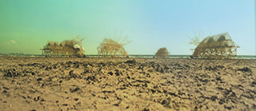

STRANDBEESTS
As with nature: the better the function, often, the more beautiful the result.
On a blustery October afternoon, on a gently raised hill above Ypenburg, the Netherlands, roughly halfway between The Hague and Delft, the 66-year-old once-aspiring physicist Theo Jansen and several assistants busily prepared to launch an odd sort of species invasion. In a few weeks, Jansen’s strandbeests — the huge self-propelled beach-striding contraptions that Jansen has spent the better part of the past quarter-century conceiving, evolving and constructing from out of ever more ambitious concatenations of lightweight yellow PVC tubing and spiny white sails — would be strutting their improbably lifelike stuff up and down Miami Beach at Art Basel, to the drop-jawed amazement of all.
But for the moment, Jansen had to carefully, with near-veterinary skill, slice and fold six of the wide-slung beests into two 40-foot-long shipping containers, so that they would survive the rigors of their Atlantic passage.After they land in Miami Beach and then in Salem in the fall of 2015, the beests will spend the following year or two alighting at the Chicago Cultural Center and possibly in New York after that, among other places. Everywhere they go, visitors will be subjected to Jansen’s soaring contention that what they are witnessing is in fact nothing less than a new form of life—and indeed life in the very midst of going viral, and not just in the cultural sense.
Adept at both drawing and math, Jansen put in seven years at Delft University of Technology on the physics track. But then he realized that he was never going to be happy “working as a robot for Philips electronics,” and thereafter he gave himself over completely to the more “hippieish” pursuits of music-making and painting that had been calling out to him all the while. Late in the 1970s, he and a group of friends managed to commandeer an abandoned school off a Delft canal (one that Werner Herzog had just abandoned after shooting “Nosferatu” there) as their studio and living space, and he has been living there on and off ever since.
By the mid-1980s, Jansen was also contributing a column every two weeks to the Dutch national newspaper De Volkskrant, or The People’s Newspaper, where he began hazarding all sorts of variously inspired (and sometimes cockamamie) schemes. For example, a new feature for passenger-jet flight, with the nose of the plane chopped clean off and the space immediately behind it converted into an observation deck, approachable through an airlock and entirely open to the elements (Jansen remains convinced and could almost convince you that the various air pressures would even out); and, another time, an arrangement of six mechanical plug-in timers, piggybacked in a way, one upon the next, that the outermost one could be counted on to sound off once every 23 million years (you never knew when these might come in handy).
And then one day, several years into this journalistic dalliance—on Feb. 24th, 1990, to be precise—Jansen took note, and quite early note at that, of the fact that the seas seemed to be rising, of the high tides registering co higher up the beaches with each passing season, a development, he pointed out, that ought to be of considerable concern and attention to his fellow Netherlanders, citizens, after all, of the Low Countries, territories much of which famously lie beneath sea level. But not to worry, for here, too, Jansen had a plan. After all, he suggested, wasn’t the problem simply one of finding a way of transferring sand grains from the bottom of the beach up to the top, in the form of giant, continuously maintained protective dunes. If that was all there was to it, why not just invent a race of wind-powered beach creatures—strandbeests, as he dubbed them—veritable herds of them, that could merrily perform the task in perpetuity. In fact, he informed his readers, he already had two prototypes firmly in mind, and he was planning to take the coming summer to build the things, so they could be then placed onto the coast in time for the first autumn storms. “Perhaps,” he concluded by way of blithe surmise, “the Dutch coast will look quite different in a year’s time.”
I was interested in survival, so everything was based on a consideration of function.
“I suppose I was a little overoptimistic back then,” Jansen admitted to me one afternoon as we sat in the cluttered study of his Delft homestead. “I fancied myself becoming a hero by saving the entire country, like that proverbial boy with his—do you also have this expression in English?—his digit in the dam wall.”
As the years passed on, Jansen was growing less and less interested in the seemingly ever more distant goal of sand- shifting and dike-plugging and more and more captivated by the sheer marvel of the immediate evolutionary process playing out before him. There were countless dead ends and haphazard detours. “As how wouldn’t there be,” he once asked me, “random mistakes and mutations being the very engine of evolution?” The calibrations and recalibrations took years, across generation after generation of new beest types and fresh experiments at the shore. “People will talk about how beautiful my beests are as they parade down the beach,” he said. “But you have to understand: I was never interested in beauty as such in them. I was interested in survival, so everything was based on a consideration of function, how to make the things function better. The fascinating thing, though, was that—here again, as with nature—the better the functioning, often, the more beautiful the result.”
The thing of it is, as I increasingly came to feel whenever Jansen would take one of his creatures out for a stroll, they really do appear to be alive. Purposeful, resolute, canny. They don’t fall into the uncanny valley that famously afflicts so many other robotic assaults on the absolutely lifelike, perhaps because they are not trying to seem anything other than what they are: They are self-evidently PVC machines, and yet, in their steady animation, they almost seem to evince a soul. Watching the strandbeests breasting forward in full stride, we can’t help ourselves: Our hearts become lodged in our mouths. But does that say something about them or about us? One time, as one beest, winded, slowly wound down to a stop, I asked Jansen that other version of the question that had been haunting me all along. “Oh,” he responded, without a moment’s hesitation. “It is obviously them: They are very much alive.” Thus, one day, Jansen was telling me that his strandbeests were already propagating themselves exponentially all over the world—not only because he had posted his famous ratios as open code for anyone else to use, but also because his beests had begun appearing in ads and videos. In one ad, in which Jansen served as a paid spokesman for BMW, he was heard to proclaim, in true Renaissance fashion, that “the walls between art and engineering exist only in our minds.” Likewise, perhaps, you were given to grumble, those between art and commerce—although Jansen’s continuing development of the strandbeests was now being supported to no small extent by these sorts of commercial endorsements. The point for Jansen, though, was that every individual who saw these images had in a certain sense taken their memetic material into their own life, and the beests thus began partaking of life in the form of lived ideas.
Turning from there to the question of how you define “life,” an associate editor at Scientific American, Ferris Jabr, writing on this paper’s opinion pages not long ago, used Jansen’s own case as an occasion to contend that “strandbeests are no more or less alive than animals, fungi and plants.” In fact, nothing, he went on to insist, is truly alive. (Nor is anything else entirely nonliving.) “Some things we regard as inanimate are capable of some of the processes we want to make exclusive to life. And some things we say are alive get along just fine without some of those processes.” In particular, Jabr pointed to how viruses, non-self-sustaining bits “of DNA or RNA encased in a protein,” while capable of incredibly efficient reproduction and evolution, can only do so by introjecting themselves into a living cell and “hijacking” its capacities. “We have insisted that all matter naturally segregates into two categories—life and nonlife—[but] have searched in vain for the dividing line.” The reason being that it’s not there. Life, he goes on to suggest, is a concept, a useful concept (it's in our heads, and perhaps can’t help but be), “but it doesn't reflect the reality of the universe outside the mind.”